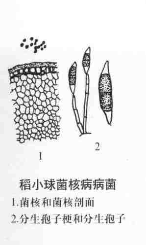
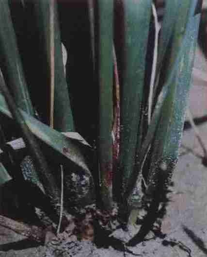

病害别名：无
为害部位：稻株下部的叶鞘和茎秆
病害性质：一般病害
病原：歧曲长蠕孢菌[Helminthosporium sigmoideum Cav.var.irregular Crall.et Tullis)稻小球菌核病病菌
病害表现：多发生在稻株下部的叶鞘和茎秆上，初期在近水面叶鞘表面上产生黑褐色小斑，逐渐向上扩展成黑色细条状、纺锤状或椭圆形病斑。同时侵入内层叶鞘和茎秆，茎秆上形成黑色线条状病斑，严重时茎秆基部变黑，组织腐烂，软化倒伏。剖开叶鞘和茎秆可见灰白色菌丝和黑褐球形小菌核。在叶鞘病斑上或水面浮游的菌核表面往往产生一层灰色霉层,即病原菌的分生孢子梗和分生孢子。 稻小球菌核病
发病规律：病原菌以菌核在稻桩、稻草和土壤内越冬。第二年春季经耕耙和灌水，菌核漂浮水面，当日平均温度升至17℃以上，萌发产生菌丝，接触水稻，侵人叶鞘组织，并蔓延至茎秆，又产生大量小菌核。多施氮肥，或后期缺水干旱时，病害发展很快，为害严重。
病害防治: 1．减少病原 重病田提倡齐泥割稻，稻桩稻草尽早处理，并把稻渣打捞干净。 2．加强肥水管理 分蘖末期适当晒田，孕穗期保持水层，后期保持四面湿润，防止断水过早。多用有机肥作基肥，增施钾肥。 3．药剂防治 在圆秆拔节和孕穗期用70％甲基托布津可湿性粉剂1000液，或50％多菌灵可湿性粉剂800倍液各喷药1次。